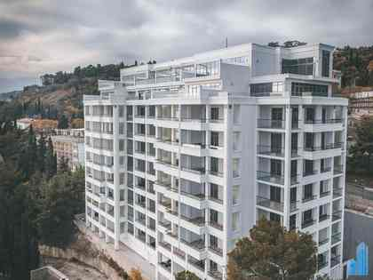

Деньги за будущие апартаменты
По сообщению ТАСС, в жалобах покупателей говорится о приобретении и полной оплате на этапе строительства.
Собственники апартаментов в корпусе «Чайка» в Ялте столкнулись с исками АО «Дом творчества „Актёр“». В разобранных на сайте делах суд постановил вернуть помещения обществу, не присудив этими решениями возврат денег.
Собственники оспаривают выводы судов. Здесь собраны истории покупателей, их доводы и разбор документов.

Что произошло
28 октября 2026 года ТАСС сообщил: после смены руководства АО «Дом творчества „Актёр“» подало иски к 14 покупателям с требованием вернуть апартаменты.
По сообщению ТАСС, в жалобах покупателей говорится о приобретении и полной оплате на этапе строительства.
Вслед за ней, как сообщает агентство, общество стало требовать возврата проданных помещений.
Число названо в сообщении ТАСС от 28 октября 2026 года.
Истории собственников публикуются по мере подготовки материалов. Обстоятельства покупок, документы и доводы по каждому делу приведены на отдельных страницах.
Позиция собственников
Собственники считают спор следствием конфликта между нынешним и прежним руководством АО. Они просят учитывать договоры, платежи и подтверждение оплаты, выданное самим продавцом.
Оплата во время строительства
Собственники подчёркивают: они платили, когда готовых апартаментов ещё не было. Их деньги поступали застройщику на этапе строительства.
Покупатели перечисляли авансы за будущие апартаменты. Договоры оформлялись как предварительные договоры купли-продажи.
В предоставленном судебном решении приведены пояснения бывшего заместителя директора по финансам: по его словам, при определении цены учитывалась потребность общества в финансировании строительства корпуса «Чайка».
Цена этого спора
Покупатели вкладывали деньги в строительство и годами ждали оформления недвижимости. Теперь им приходится защищать приобретённое в судах. В разобранных на сайте делах суд постановил вернуть помещения обществу, не присудив этими решениями возврат денег.
Что объединяет истории покупателей
Сначала покупатели перечислили авансы за будущие апартаменты. Основные договоры и регистрация права появились позже. В суде возник спор о связи этих документов и платежей.
Покупатели платили за будущую недвижимость по предварительным договорам и ждали завершения строительства.
Заключались основные договоры, регистрировались права. Покупатели рассчитывали, что приобретённое защищено.
Людям приходится вновь объяснять связь своих платежей, договоров и полученного имущества.
Собственники просят оценивать оплату, передачу помещения и основной договор вместе. Причины отказа в возврате денег изложены отдельно в каждой истории.
Спор о корпоративном одобрении
Суд признал продажи взаимосвязанными и счёл необходимым одобрение общего собрания акционеров. Собственники с этим не согласны.
Подход в рассмотренных делах
Суд оценил несколько продаж как совокупность взаимосвязанных сделок и пришёл к выводу, что требовалось одобрение общего собрания акционеров. Среди оснований названы характер имущества, период продаж и действия прежнего руководства общества.
Почему собственники возражают
Собственники настаивают, что каждый покупал свой апартамент по отдельному договору. Они оспаривают основания объединения продаж и просят оценить обстоятельства каждой покупки.
Вопрос о сроках давности
От ответа зависит, пропущен ли срок обращения в суд. Суд связал начало срока с осведомлённостью нового руководства; собственники оспаривают этот вывод.
Суд исходил из момента, когда новое руководство получило возможность узнать о нарушении, и сослался на отсутствие доказательств более ранней осведомлённости общества.
Кто бы ни возглавлял АО, деньги поступали самому обществу, а договоры заключались от его имени. Собственники просят учитывать всю историю действий компании.
В пункте 3 постановления Пленума Верховного суда № 43 разъяснено, что изменение состава органов юридического лица не влияет на определение начала течения давности.
Разъяснение Верховного суда ↗Почему это касается каждого
По сообщению «Российской газеты» от 22 октября 2026 года, СТД вернул права на апартаменты в Ялте, что помогло снять долговые обязательства свыше 90 млн рублей. РГ о возврате прав на апартаменты · 22.10.2026 ↗
За этим отчётом — судьбы людей, которые оплатили строительство и оформили собственность. В делах собственников суд постановил вернуть помещения АО «Дом творчества „Актёр“», не присудив одновременного возврата денег.
Продавец может получить обратно оплаченную недвижимость и возможность продать её снова. Покупатель — остаться без имущества и присуждённого возврата средств.
Собственники считают такую практику порочной: внутренние проблемы общества перекладываются на покупателей, а договоры, платежи и регистрация теряют надёжность. Это подрывает доверие к частной собственности и создаёт опасную неопределённость на рынке недвижимости.

Для журналистов и читателей
Просим журналистов проверить документы и запросить у АО «Дом творчества „Актёр“» объяснение: как общество учитывает полученные авансы и подтверждение полной оплаты, требуя вернуть апартаменты? Собственники добиваются пересмотра судебных актов и хотят, чтобы их доводы были рассмотрены Верховным судом.
Общий контекст, примеры из судебных дел, доводы собственников и ссылки на источники.
Скачать справку · TXT ↓Перейти к историям собственников ↑Источники
В историях собственников разобраны предоставленные решения, описанные в них документы и позиции сторон. Материалы раздела дополняются по мере подготовки историй.
Разбор документов по истории Сурвилло →
Разбор документов по истории Куземина →
ТАСС о 14 покупателях · 28.10.2026 ↗. Источник общего контекста спора.
Пленум № 43, пункт 3 ↗ — о начале давности при смене органов юридического лица.
Пленум № 27, пункты 14–16 ↗ — о взаимосвязанных сделках и корпоративном одобрении.
Обновлено 4 ноября 2026 года. Разборы на сайте основаны на предоставленных судебных решениях и указанных публикациях. Оценки и возражения выражают позицию собственников. Истории покупателей дополняются по мере подготовки материалов.